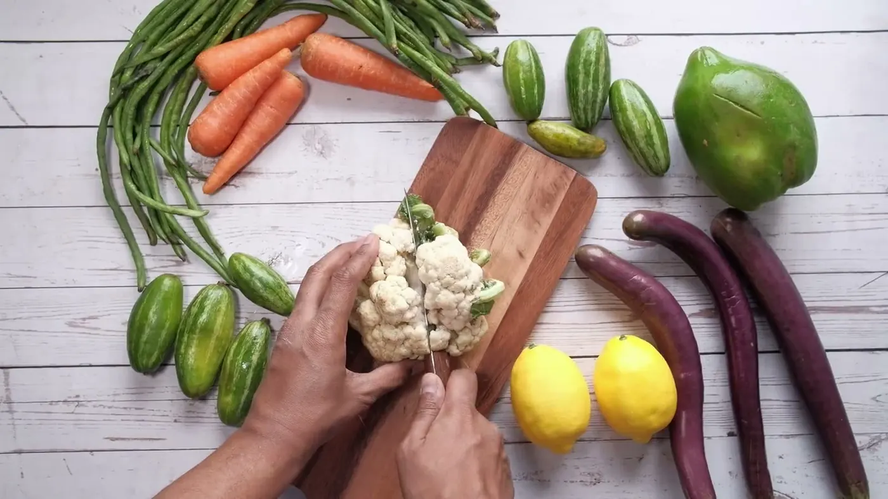

Ernährung nach TCM.Fünf-Elemente-Ernährung in Steinberg am See bei Schwandorf
Nicht nur was wir essen, sondern wie es wirkt: Geschmack, thermische Wirkung, Jahreszeit — abgestimmt auf dich, ohne starre Regeln und mit Genuss.

Yin und Yang auf dem Teller.
In der Traditionellen Chinesischen Medizin hat die Ernährung einen besonderen Stellenwert. Es geht nicht nur darum, was wir essen, sondern auch darum, wie Lebensmittel nach dem traditionellen Verständnis der TCM auf unser Wohlbefinden und unsere innere Balance wirken. Eine wichtige Rolle spielt das Zusammenspiel von Yin und Yang — ein ausgewogenes Verhältnis verschiedener Kräfte und Qualitäten.
Die Ernährung nach den Fünf Elementen — Holz, Feuer, Erde, Metall und Wasser — ordnet Lebensmittel unter anderem nach ihrer thermischen Wirkung: heiß, warm, neutral, erfrischend oder kalt. Dazu kommen die fünf Geschmacksrichtungen sauer, bitter, süß, scharf und salzig.
Ein Grundgedanke: Ernährung passt immer individuell zum Menschen. Was dem einen guttut, muss für den anderen nicht gleich geeignet sein. Deshalb zählen deine Konstitution, deine Lebenssituation, die Jahreszeit und deine Bedürfnisse bei der Auswahl und Zubereitung. Nach dem traditionellen Verständnis der TCM kann eine so abgestimmte Ernährung dazu beitragen, Disharmonien auszugleichen und das körperliche Wohlbefinden zu unterstützen — deshalb hat sie in der chinesischen Lebenspflege einen so hohen Stellenwert.
Im Mittelpunkt stehen Bekömmlichkeit, Genuss und eine ausgewogene Ernährung, die sich gut in deinen Alltag einfügt. Keine starren Regeln, keine Verbote — sondern deine eigenen Bedürfnisse besser kennenlernen und die Ernährung bewusst darauf abstimmen. Nach dem traditionellen Verständnis der TCM spielen dabei Zeitpunkt, Wärme und Art der Mahlzeiten auch für Stressregulation, Schlafgesundheit und Stoffwechsel eine Rolle.
„Wenn der Körper erst einmal bekommt, was er wirklich braucht, treten Heißhunger und Gelüste immer weniger auf.“ — Barbara Temelie
Holz nährt Feuer, Feuer nährt Erde.
Der nährende Kreislauf: Jedes Element geht aus dem vorigen hervor. Fahre über ein Element — die Liste zeigt Geschmack, Jahreszeit und Beispiele.
Drei Schritte, kein Ernährungsplan von der Stange.
Gespräch
Alltag, Gewohnheiten, Vorlieben, Wünsche — wir schauen, wo du stehst.
Einordnung
Welche Elemente kommen bei dir zu kurz, welche zu viel? Was verträgt sich mit deinem Tag?
Umsetzung
Konkrete Vorschläge für Frühstück, Mittag, Abend — mit Rezepten, die du wirklich kochst.
Themen, mit denen Menschen zu Inna kommen.
Schwung am Morgen, Ruhe am Abend
Ein warmes Frühstück verändert den Tag — die TCM erklärt, warum. Abends geht es um Stressregulation und Schlafgesundheit.
Verdauung und Stoffwechsel
Bekömmlicher essen: Kombinationen, Temperaturen, Zeiten.
Wärme im Körper
Kalte Hände, Frösteln? Thermische Wirkung von Lebensmitteln nutzen.
Frauengesundheit ab 40
TCM-Frauengesundheit, hormonelle Frauengesundheit, Wechseljahre: Die Lebensphase verändert den Bedarf — die Küche kann mitgehen.
Gewicht in Balance
Ohne Zählen: Sättigung, Süßhunger und Rhythmus verstehen.
Intoleranzen
Gluten, Histamin, Laktose, Sorbit — was der Teller trotzdem hergibt.
Bevor du dich meldest.
Nein. Die Fünf-Elemente-Ernährung ist keine Diät, sondern eine Art, Lebensmittel zu betrachten. Meist geht es um kleine Verschiebungen: wärmer kochen, anders kombinieren, den Tag anders beginnen.
Wir sprechen über deinen Alltag, deine Gewohnheiten und das, was du dir wünschst. Daraus entsteht ein erster Vorschlag — alltagstauglich und mit Genuss.
Nein. Die Fünf Elemente lassen sich mit dem umsetzen, was auf dem Wochenmarkt in Schwandorf liegt. Regionale Küche passt sehr gut dazu.
Für alle, die sich mit ihrem Essen wohler fühlen möchten. Inna ist Dipl. Ernährungsexpertin nach TCM — einen Arztbesuch ersetzt das Gespräch mit ihr nicht.
Meine Angebote dienen dem Wohlbefinden und der Lebenspflege. Sie sind keine Heilbehandlung, ich stelle keine Diagnosen, und sie ersetzen keinen Besuch bei Ärztin oder Arzt.

Reden wir über deinen Teller.
Ein erstes Gespräch klärt, ob die Fünf-Elemente-Ernährung zu dir passt — ohne Verpflichtung.
Kurz sagen, worum es dir geht — Kurs, Ernährung oder eine Anwendung.
Ein persönliches Gespräch: Wo stehst du, was wünschst du dir?
Kurs, Termin oder Ernährungsgespräch — Schritt für Schritt, in deinem Tempo.
Oder direkt anrufen: 0151 42548212